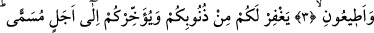

KEŞKE BİLSEYDİNİZ!
Bismillâhirrahmânirrahîm
1. Kendilerine yakıcı bir azap gelmeden önce kavmini uyar, diye Nûh’u kendi
kavmine gönderdik.
2. Nûh şöyle dedi: Ey kavmim! Şüpheniz olmasın ki, ben sizi, apaçık uyaran bir
kimseyim.
3. Allah’a kulluk edin; O’na karşı gelmekten sakının ve bana itâat edin ki,
4. Allah bir kısım günahlarınızı bağışlasın ve sizi belli bir vâdeye kadar tehir etsin
(muâhaze etmeden yaşatsın). Bilinmeli ki Allah’ın tâyin ettiği vâde gelince, artık o
ertelenmez. Keşke bilseydiniz!
“Şüphesiz biz Nûh’u, kendilerine elem verici” tufan, suda boğmak gibi bu dünyada;
ya da âhiret azâbı gibi daha ilerde “bir azap gelmeden önce kavmini uyar, diye onlara
gönderdik.” Bu âyetin başında yer alan “erselna” fiilindeki “nâ” zamîri bir başka
ifâdeyle azamet nûnunun sırrı daha evvel defalarca geçmişti.
Cümlenin başında yer alan “erselna” fiilinin kökü olan “irsal” -imsak yâni tutmak-
anlamının zıddı olarak “göndermek” anlamına gelir. Bu gönderme “teshîr” yâni emrine
âmâde kılma biçiminde olur. Rüzgâr ve yağmurun gönderilmesi gibi. Veya seçilmiş
insanların gönderilmesi şeklinde olur. Rasûllerin gönderilmesi gibi. Ya da “tahliye”
yâni önünü açma ve engel olma durumunu ortadan kaldırma biçiminde olur. Şu âyet-i
kerîmede olduğu gibi: “(Rasûlüm) görmedin mi? Biz kâfirlerin üzerine kendilerini
iyice (isyankârlığa) sevkeden şeytanları gönderdik” (Meryem, 19/83).
Katâde der ki: Allah Nûh (a.s.)’ı bir adadan gönderdi ve Hz. Nûh kavmine bu adadan
gitti. Nûh’un asıl adı Abdulğaffâr (a.s.) idi. Kendisine Nûh denmesi çeşitli sebeblere
dayandırılmaktadır. Bâzılarına göre nefsine çok ağladığından bu ismi almıştır.
Bâzılarına göre Nûh kelimesi Süryânîce bir kelime olup anlamı sâkin olan, yerleşen kişi
demektir. Çünkü yeryüzü kâfirlerin pisliğinden temizlendiğinde Hz. Nûh (a.s.) oraya
yerleşmiştir.
Nûh (a.s.) bâzılarına göre peygamberler arasında kendisine şerîat verilen ilk